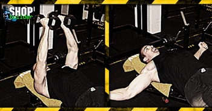

Ugrás a tartalomra
Ugrás a tartalomra
Testépítés
Tárogatás egyenes padon
{kind=link}
Hatás
A tárogatás egyenes padon a mellizmokat és a deltaizmokat fejleszti.
Kiinduló helyzet
Feküdj háton egy vízszintes padra, tarts mindkét kezedben egy egykezes súlyzót és nyomd ki karnyújtásnyira mellkasa fölé.
A mozgás
A súlyzókat engedd le könyöködet enyhén behajlítva, és távolítsd a törzsedtől ki és lefelé olyan távolra, amíg jó feszülést nem érzel a mellkasi területen. A felkarodnak jelentősen a tested vonala alá kell mennie.
Edzéstipp
Vegyél mély levegőt, amikor a súlyzót lefelé ereszted, és akkor lélegezz ki, amikor ugyanazon az íven felső helyzetbe emeled vissza.
Feküdj háttal egy padra, lábait vesd meg szilárdan a padlón. Tarts kinyújtva kezeidben egykezes súlyzókat a mellkasod felett. A karjaidat a gyakorlat során enyhén behajlított helyzetben kell tartani, nem kell teljesen kinyújtani. A súlyokat eressze le oldalt, majd emelje fel. Ha az izmaid már bemelegedtek, próbáld minél jobban megfeszíteni azokat. Karjaid tartsd mereven, enyhén behajlított helyzetben.
Évekkel ezelőtt ezt a gyakorlatot szigorúan a padlón fekve, kis súlyokkal végezték. Nagyon könnyű súlyokat használtak, mert az akkori szakértők ragaszkodtak ahhoz, hogy a gyakorlatot teljesen kinyújtott karral kell csinálni. Az enyhén behajlított, de a gyakorlat során mereven maradó kar csökkenti a könyökízület terhelését, nagyobb súlyok használatát teszi lehetővé és véd az esetleges sérülések ellen. Az indokolatlanul nagy súlyok használata nem csak sérülésveszéllyel jár, hanem a gyakorlat szabályosságának rovására megy. A fekvenyomás fejlesztése erőszint tekintetében különösen nagy figyelmet igényel a súlyok megválasztás és Ügyelj arra, hogy ne nyomd ki a súlyt, ebben az esetben a gyakorlat hasonló terhelést nyújt, mint a fekvenyomás egyenes padon.